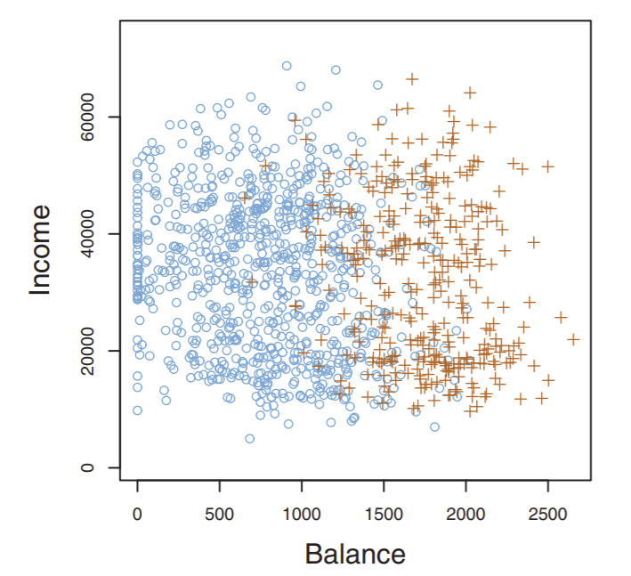
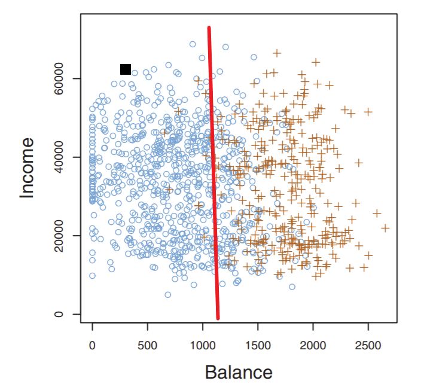

Training and Testing¶
The process of machine learning can be divided into two big categories: training and testing. (Actually, there’s a third category, but we’ll cover this later).
So what do we have to start? Well, remember we have the shitload of data points of credit card defaulters and non-defaulters we saw in this graph:
{kind=link}
We call this dataset of credit card users for whom we know defaulted/not as our training data. These points are used to “train” a model that will then try to generalize and predict the class on new, unseen data- in this case, new credit card applicants. This model will be some numerical rule. In the dataset above, the rule that makes the most sense is a straight line: points to the right of this line are risks, and points to the left are not.
Note
Treat training our classifier as a “black box” for now- don’t worry about how exactly the model is trained, just know that in training, you input training data and get something that can make predict the class of data as an output.
So once we’ve fitted our model on our training data via some algorithm, we can visualize our model (shown in red below):
{kind=link}
Note
This line has a special name, the decision boundary: it literally is the boundary where the decision for a point is made whether it is a risk or not. Such a boundary, as we’ll see later, does NOT have to be a line!
Now, say a new applicant comes in, shown as a black square above. Do we classify this applicant as a risk? Probably not, since our rule says that any point to the left of the line is not a credit risk.
In ML, we call this new, unseen data point a test point: we want to test whether our classifier can classify it correctly or not. We’re usually going to have multiple test points to test our classifier on: this is called our testing data. The proportion of test points classified correctly is a very good indicator of the quality of our classifier model.